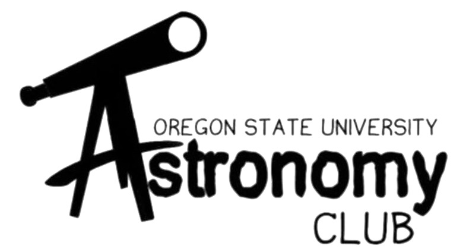
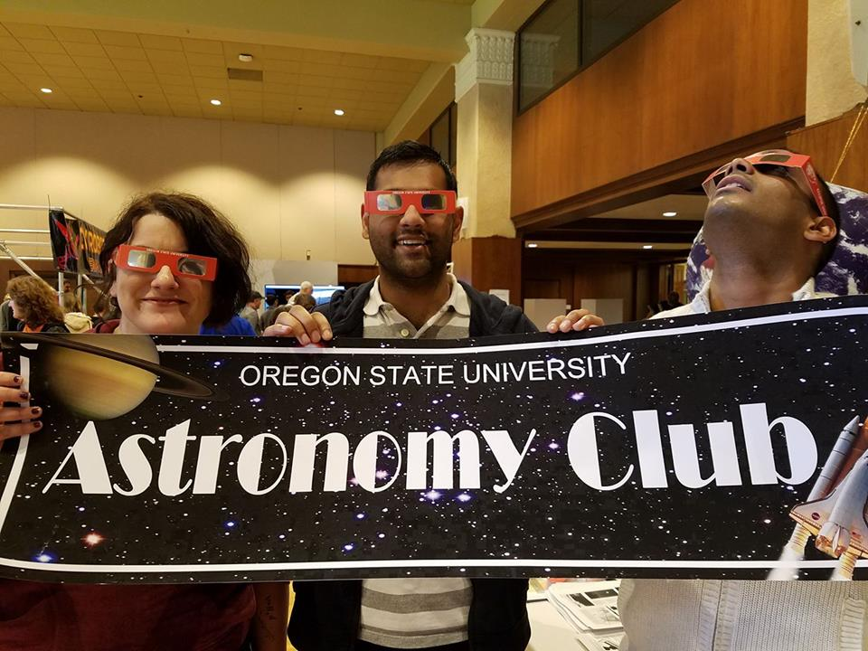

"Be clearly aware of the stars and infinity on high. For then life seems truly enchanting after all" – Vincent Van Gogh
What’s beyond the clouds? The atmosphere? The planet? The stars?
Gazing up and wondering beyond for hours on end is always a wonderful and enthralling pastime. A tradition as old as the Earth itself. But observing the vast and endless universe with others and extravagant equipment is even better. Become lost amongst the stars along with other people who are just as obsessed with the still, silent, sparkling universe. If you are just as captivated as we are at what’s beyond, the Oregon State University Astronomy Club would be happy to welcome you.

Who doesn’t love looking beyond and wondering how small we really are? That’s why we have the Astronomy Club. The Oregon State University Astronomy Club started in 2016. As the years progress and we continue to hurl across space, our community is slowly growing. Through our outreach work, we strive to foster a passion for astronomy in OSU students and the Corvallis community. We host open house events in order to enthrall interest in potential astronomers, as well as to spread awareness of scientific breakthroughs.
Even if your true passion isn’t all about space, stars, and nothing beyond, but you still just like looking every now and again; the Oregon State Astronomy Club is always open to anyone with just a tiny sense of wonder.
Rosalyn Fey is the Secretary of the OSU Astronomy Club. She is a PhD student in the Hendrix lab in the Dept. of Biochemistry and Biophysics at OSU, and is studying microRNA expression and the aging circadian clock using fruit flies as a model organism. Rosalyn enjoys becoming familiar with the seasonal habits of celestial bodies and constellations, as well as learning about what remains to be discovered and understood about the universe. She hopes that everyone who comes in contact with the Astronomy Club will find that astronomy is exciting and accessible!
Dominic Daprano is the Outreach officer of the OSU Astronomy Club. He is a undergraduate student studying physics and mathematics with a minor in Computer Science. Dominic enjoys astronomy because it is the source of endless mystery and wonder. He hopes to continue to advance scientific progress and expand our understanding of the universe.;
 Magnus L’Argent is the Astronomy Club’s Vice President and an undergraduate studying Physics and Mechanical Engineering with an Aerospace Minor. He is currently doing research with pulsar timing arrays. Magnus loves to learn about new and exciting astronomy developments and sharing them with others.
Magnus L’Argent is the Astronomy Club’s Vice President and an undergraduate studying Physics and Mechanical Engineering with an Aerospace Minor. He is currently doing research with pulsar timing arrays. Magnus loves to learn about new and exciting astronomy developments and sharing them with others.
Phia Morton is the Astronomy Club’s Education Officer and an undergraduate student studying Physics with a minor in Nuclear Engineering. She has experience with telescopes from her job at the Oregon Observatory and volunteer experience at Pine Mountain Observatory. Phia enjoys how astronomy show us how small we really are and that there is so much in the universe that we have yet to explore.
- Remote Telescope Viewing -
Posted on May 11, 2021 by dapranod
We are excited to announce that the Astronomy Club is hosting a virtual star party with Tom Carrico on Monday, May 17 starting at 8:00. Tom Carrico teaches astrophotography and heads the local astronomy club, Heart of the Valley Astronomers. We’re super lucky that he is willing to stargaze with us using his remotely operated telescope in New Mexico! Make sure to bring a list of astronomical objects that you want to see.
Check out Tom Carrico’s site of some of the photos he has taken!
- Possible new observatory -
Posted on April 28, 2021 by dapranod
Join the Astronomy Club on Monday, May 3rd at 6 PM as we host Didgette McCracken (OSU Open Campus – Grant County) and amateur astronomers from John Day in Eastern Oregon. We will hear about their plans to construct an observatory in John Day, and learn about how we can get involved in the project, including opportunities to help with funding, education/outreach, star gazing, future research, etc. We encourage anyone who wants to learn about this project or is interested in getting involved to attend, so please drop by and see what’s what!
- Astronomy Club Meeting next week -
Posted on April 13, 2021 by dapranod
We are excited to announce that the Astronomy Club is hosting a virtual star party with Tom Carrico on Monday, April 19 at 7:45. Tom Carrico teaches astrophotography and heads the local astronomy club, Heart of the Valley Astronomers. We’re super lucky that he is willing to stargaze with us using his remotely operated telescope in New Mexico!
Check out Tom Carrico’s site of some of the photos he has taken!